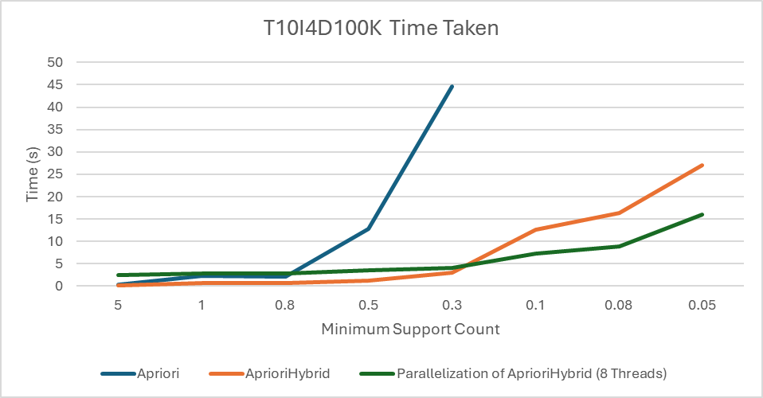

Table of Contents
Introduction
Frequent itemset mining finds the item sets in a database of transactions (a list of items) that are frequent. This means that the item set is contained in at least some number of transactions. These frequent item sets can be used to find association rules among the set. For example, if a person buys cereal, then they have a 20% chance of also buying milk. This can be very useful for marketing. AprioriHybrid was introduced by Rakesh Agrawal and Ramakrishnan Srikant in “Fast Algorithms for Mining Association Rules.” The algorithm I implemented multithreads AprioriHybrid for one processor with multiple cores.
Description
Apriori-Hybrid is an algorithm that initially uses Apriori to find frequent item sets for a transactional database, then it switches to using Apriori-TID for faster performance.
Apriori starts with counting the number of times each item is in the database. It filters those items based on whether the item count is greater than the minimum support to find the frequent items. Then, it generates candidate steps by joining together two frequent itemsets or items for the first pass with the same prefix and prunes them based on whether its subsets are also frequent. After, it passes through the database, counts those item sets, and filters for frequent item sets. If no frequent item sets remain, then the algorithm stops. Otherwise, we repeat generating candidate item sets and filtering for frequent item sets.
Apriori-TID uses a transaction identifier (TID) for each transaction that contains a set of item sets. It first starts with transforming the original transactions into transaction identifiers that contain sets of one item. For each pass of the TIDs, it increments the count for the item sets in the TIDs and adds that item set to the next TID set. This could be done by checking if all its subsets are within the TID set. After all those counts are done, we filter for frequent item sets and generate candidate item sets similar to Apriori.
Multithreaded Apriori-Hybrid works by partitioning the database and giving each thread a partition. Each thread will also receive frequent item sets to be used for generating candidate item sets. It then uses Apriori-Hybrid to count the candidate item sets on its partition and sends it back to some main thread. The main thread then filters for frequent item sets and sends them to each thread. This repeats until no new frequent item sets are created.
Implementation Details
Apriori
For the first pass, each item count is stored in an array of integers. For each transaction, we increment the items in the array. We filter through those counts and find the ones greater than minimum support to get the frequent items. For the second pass, I used a lower triangular matrix stored as a 1D array with length n × (n - 1) / 2 - n, where n is the number of items in the transaction set. The index value for (a, b) where a < b is a * (a - 1) / 2 + b. When counting, I index into the matrix and increment the corresponding count for each two-item set in the transaction. After the counting, I filter each two-item set to find the frequent two-item sets.
For the join step, I have a map that has indices of the prefixes (all the items except the last) of all the frequent item sets. The values are an array of the last items. I loop through each entry in the map, and loop through each 2-combination of the value to join them together into a candidate item set by taking the prefix array and pushing the small then large item. During this step, I also prune by checking that every k-1-subset including the last two items are also frequent. These candidate item sets are stored in a hash tree.
The hash tree is a tree data structure that contains an array of its children. When indexing with an array, I hash the corresponding element and use that hash to find its corresponding index into that array to get its child. When all the elements have been hashed and indexed into, we are left with a leaf node that contains an array of candidate item sets and counts.
When counting for each transaction, I count through trying each possible combination in the transaction. This is done by finding all k-combinations in the transaction and trying to increment each combination in the hash tree. After the pass, we filter all the candidate item sets to find the frequent item sets. If no frequent item sets are found, then the algorithm ends.
AprioriTID
I assume we have frequent k-item sets found in Apriori for this algorithm because of the hybrid approach. We first generate the next candidate item sets based on Apriori’s joining and pruning step described above. Then we count based on Apriori’s counting. If a candidate item set is incremented, then add that item set to a set corresponding to that transaction called the transaction ID. At the end, I have an array of transaction IDs corresponding to the transaction dataset. We remove any empty transaction IDs. We filter the candidate item sets to generate the frequent item sets.
For any pass after, we generate the candidate item sets based on the frequent item sets from Apriori’s method. When we count, instead of using the transaction, we use the transaction ID. Instead of looping through each candidate itemset and finding whether all its subsets are in the TID, I used the join step to get item sets in that transaction and incrementing the corresponding candidate item set. If we incremented that candidate item set, then we add it to the next transaction ID. We filter all the candidate item sets to get all the frequent item sets. If no frequent item sets are found, then the algorithm ends.
Dataset
I used a synthetic dataset T10I4D100K found on the Frequent Itemset Mining Dataset Repository. This dataset includes 100,000 transactions with an average size of 10 items. The average size of maximal potential frequent item sets is 4.
Results
This graph shows that AprioriHybrid scales better than Apriori, and multithreaded AprioriHybrid version is some multiple times faster than AprioriHybrid. This factor is less than 8 due to the time spent on the main thread instead of multiple threads. The multithreaded version is slower at smaller scales due to how I combine the counts in the main thread. I found five frequent itemsets of length 10 at a minimum support count of 0.05%. They are:
- 126 158 193 214 332 561 682 833 843 998
- 8 71 75 108 242 438 486 684 766 958
- 42 147 196 269 464 515 820 823 922 975
- 75 205 207 285 403 461 529 829 896 950
- 116 381 492 523 632 706 777 778 865 893
Discussion
My AprioriHybrid implementation scales better than my Apriori implementation as shown in the results section. This is due to not having to count each combination in the transaction for AprioriTID, which grows combinatorically large. The multithreaded version suffers from having to combine the counts of candidate item sets and needing a main thread to do that. This means that the main thread takes up almost half the computing time, which would not be solved by adding more threads. My implementation also requires a parameter to define when it should switch to using AprioriTID. This means the user would have to determine the best pass to switch to get the most performance. A potential fix is to use heuristics to determine when to switch. Following that idea, I could use heuristics to figure out which transactions could switch to TID and which transactions should stay to using Apriori.
Another performance hit is the use of a hash tree for counting, especially in lower passes. The hash tree is very small at lower passes, causing the leaf nodes to contain too many candidate item sets. This leads to many expensive array comparisons. A potential fix is to use a trie to store the counts, taking advantage of the fast indexing and no array comparisons. Another problem is the large amount of memory the TIDs take up. There are not any major fixes I can think of except to use a more efficient data structure than a hash set. A bottleneck can occur when some threads are idle and other threads are still counting can occur due to the partitioning. A potential fix is to use a thread pool where each thread picks the next transaction to count and continues doing that. The other bottleneck is the main thread combining all the item set counts and filtering them. Lastly, the counting of every candidate item set causes Apriori-like algorithms to be slow on low passes like 3 and 4. My implementation spends half the time doing pass 3 for a support count of 0.05%.
One future plan is to parallelize this algorithm, so that it could work with multiple processors. This allows it to run on bigger machines that could run the algorithm much faster than with one processor. One part of the algorithm I would need to change is the work the main processor does. Another plan could be to use a prefix tree, or trie, to do the counting instead of a hash tree. "A fast APRIORI implementation" by Ferenc Bodon shows how that would be implemented.
Source Code
Table of Contents
I wrote a lot of source code for this project using only the standard library and a command line parsing library for the commands. This is all implemented in the Rust language. The GitHub repository is https://github.com/Striker2783/data_mining/tree/presentation.
Transaction Set
use std::{fs::File, io::{BufRead, BufReader}, ops::{Deref, DerefMut}};
/// A 0-indexed item set
/// A Transactional Database
#[derive(Debug, Default)]
pub struct TransactionSet {
pub transactions: Vec<Vec<usize>>,
pub num_items: usize
}
// Dereferences to the underlying Vector
impl Deref for TransactionSet {
type Target = Vec<Vec<usize>>;
fn deref(&self) -> &Self::Target {
&self.transactions
}
}
impl DerefMut for TransactionSet {
fn deref_mut(&mut self) -> &mut Self::Target {
&mut self.transactions
}
}
impl TransactionSet {
/// Constructor
pub fn new(transactions: Vec<Vec<usize>>, num_items: usize) -> Self {
Self { transactions, num_items }
}
/// Iterates over all the transactions
pub fn iter(&self) -> impl Iterator<Item = &Vec<usize>> {
self.transactions.iter()
}
/// Constructs the set from a .dat file
/// .dat file is a file with one transaction per line.
/// Each transaction is a space-separated list of ids.
pub fn from_dat(f: File) -> Self {
let mut max = 0;
let mut transactions = Vec::new();
// Loops through each line of the file
for l in BufReader::new(f).lines() {
if l.is_err() {
continue;
}
let line = l.unwrap();
// Parses the transaction
let mut items: Vec<usize> = line.split_whitespace().map(|s| s.parse::<usize>().unwrap()).collect();
// Sorts the items and sets the max
items.sort();
max = (*items.iter().max().unwrap()).max(max);
transactions.push(items);
}
Self { transactions, num_items: max + 1 }
}
}
Candidates
use std::{collections::{HashMap, HashSet}, ops::{Deref, DerefMut}};
pub type CandidateType = HashSet&Vec&usize>>;
pub type CandidateCounter = HashMap&Vec&usize>, u64>;
/// A wrapper for the Candidates
#[derive(Debug, Default, Clone)]
pub struct Candidates(CandidateType);
impl Candidates {
/// Constructor
pub fn new(v: CandidateType) -> Self {
Self(v)
}
}
// Dereferences to the inner type
impl Deref for Candidates {
type Target = CandidateType;
fn deref(&self) -> &Self::Target {
&self.0
}
}
impl DerefMut for Candidates {
fn deref_mut(&mut self) -> &mut Self::Target {
&mut self.0
}
}
impl From&CandidateType> for Candidates {
fn from(value: CandidateType) -> Self {
Self::new(value)
}
}
Hash Tree
use std::{
hash::{DefaultHasher, Hash, Hasher},
ops::{Deref, DerefMut},
};
use crate::transaction_id::TransactionIdCounts;
/// A Hash Tree for the Apriori Algorithm
#[derive(Debug, Default)]
pub struct AprioriHashTree(AprioriHashTreeGeneric<50>);
impl AprioriHashTree {
pub fn new() -> Self {
Self(AprioriHashTreeGeneric::<50>::default())
}
}
impl Deref for AprioriHashTree {
type Target = AprioriHashTreeGeneric<50>;
fn deref(&self) -> &Self::Target {
&self.0
}
}
impl DerefMut for AprioriHashTree {
fn deref_mut(&mut self) -> &mut Self::Target {
&mut self.0
}
}
/// A Hash Tree for the Apriori Algorithm
/// Does not care about duplicates.
#[derive(Debug, Default)]
pub struct AprioriHashTreeGeneric<const N: usize> {
root: HashTreeInternalNode<N>,
/// The number of elements in the Tree
length: usize,
}
impl<const N: usize> AprioriHashTreeGeneric<N> {
pub fn new() -> Self {
Self::default()
}
/// Gets the leaf node for v
fn get_leaf(&self, v: &[usize]) -> Option<&HashTreeLeafNode> {
assert!(!v.is_empty());
// Gets the node for the first element
let mut hasher = DefaultHasher::new();
v[0].hash(&mut hasher);
let mut curr = &self.root.map[(hasher.finish() as usize) % N];
// Loops through the rest of v
for &v in v.iter().skip(1) {
// Unwrap the node
if let Some(n) = curr {
// Check if an internal node exists for it.
match n.as_ref() {
// Set the current node to the next node
Node::Internal(hash_tree_internal_node) => {
let mut hasher = DefaultHasher::new();
v.hash(&mut hasher);
curr = &hash_tree_internal_node.map[(hasher.finish() as usize) % N];
}
// If a leaf is there, then too many elements in v
Node::Leaf(_) => return None,
}
} else {
return None;
}
}
// Checks if curr is some Node
if let Some(n) = curr {
match n.as_ref() {
// If it's an internal, then v has too little elements
Node::Internal(_) => return None,
// Otherwise it is good
Node::Leaf(hash_tree_leaf_node) => return Some(hash_tree_leaf_node),
}
}
None
}
/// Gets the leaf node of the tree with a mutable reference
fn get_leaf_mut(&mut self, v: &[usize]) -> Option<&mut HashTreeLeafNode> {
assert!(!v.is_empty());
// Gets the first node from v[0]
let mut hasher = DefaultHasher::new();
v[0].hash(&mut hasher);
let mut curr = &mut self.root.map[(hasher.finish() as usize) % N];
// Loop through the rest of the elements for v
for v in v.iter().skip(1) {
// Unwraps the current node
if let Some(n) = curr {
match n.as_mut() {
// If it's an internal node, get the next node
Node::Internal(hash_tree_internal_node) => {
let mut hasher = DefaultHasher::new();
v.hash(&mut hasher);
curr = &mut hash_tree_internal_node.map[(hasher.finish() as usize) % N];
}
// Otherwise v is too big
Node::Leaf(_) => return None,
}
} else {
return None;
}
}
// Unwrap the current node
if let Some(n) = curr {
match n.as_mut() {
// If it's internal, v is too small
Node::Internal(_) => return None,
// Otherwise, it is good
Node::Leaf(hash_tree_leaf_node) => return Some(hash_tree_leaf_node),
}
}
None
}
/// Checks if the tree contains v
pub fn contains(&self, v: &[usize]) -> bool {
assert!(!v.is_empty());
let leaf = self.get_leaf(v);
if let Some(l) = leaf {
l.contains(v)
} else {
false
}
}
/// Adds v to the tree
pub fn add(&mut self, v: &[usize]) {
assert!(!v.is_empty());
// Gets the node for v[0]
let mut hasher = DefaultHasher::new();
v[0].hash(&mut hasher);
let hash = hasher.finish() as usize;
let mut curr = &mut self.root.map[hash % N];
// Loops through the rest of v
for v in v.iter().skip(1) {
// If the node does not exist, create a new internal node
if curr.is_none() {
*curr = Some(Box::new(Node::Internal(HashTreeInternalNode::default())));
}
if let Some(n) = curr {
match n.as_mut() {
// If n is an internal node, get the next node
Node::Internal(hash_tree_internal_node) => {
let mut hasher = DefaultHasher::new();
v.hash(&mut hasher);
curr = &mut hash_tree_internal_node.map[(hasher.finish() as usize) % N];
}
// Otherwise v is too big
Node::Leaf(_) => return,
}
}
}
// Create a leaf node if curr is none
if curr.is_none() {
*curr = Some(Box::new(Node::Leaf(HashTreeLeafNode::default())));
}
if let Some(n) = curr {
match n.as_mut() {
// If curr is an internal node, v is too small
Node::Internal(_) => return,
Node::Leaf(hash_tree_leaf_node) => hash_tree_leaf_node.add(v),
}
}
// Increment the length because we added an element
self.length += 1;
}
/// Increments v
pub fn increment(&mut self, v: &[usize]) -> bool {
assert!(!v.is_empty());
let leaf = self.get_leaf_mut(v);
if let Some(leaf) = leaf {
leaf.increment(v);
true
} else {
false
}
}
/// Gets the count of v
pub fn get_count(&self, v: &[usize]) -> Option<u64> {
let leaf = self.get_leaf(v);
if let Some(l) = leaf {
l.get_count(v)
} else {
None
}
}
/// Removes v from the tree
pub fn remove(&mut self, v: &[usize]) -> Option<(Vec<usize>, u64)> {
let leaf = self.get_leaf_mut(v);
if let Some(l) = leaf {
l.remove(v)
} else {
None
}
}
/// A for each mutable loop (Mutable iterator is too much of a pain to write)
pub fn for_each_mut(&mut self, mut f: impl FnMut(&[usize], &mut u64)) {
self.root.for_each_mut(&mut f);
}
/// Gets an iterator for the Hash Tree
pub fn iter(&self) -> HashTreeIterator<N> {
HashTreeIterator::new(self)
}
/// Gets the number of elements in the tree
pub fn len(&self) -> usize {
self.length
}
/// Checks if the tree is empty
pub fn is_empty(&self) -> bool {
self.len() == 0
}
}
/// An Enum for a node of the Hash Tree.
#[derive(Debug)]
enum Node<const N: usize> {
Internal(HashTreeInternalNode<N>),
Leaf(HashTreeLeafNode),
}
/// The internal node for the Hash Tree
#[derive(Debug)]
struct HashTreeInternalNode<const N: usize> {
/// A mapping to its children nodes
map: [Option<Box<Node<N>>>; N],
}
impl<const N: usize> HashTreeInternalNode<N> {
/// A mutable for each loop
fn for_each_mut(&mut self, f: &mut impl FnMut(&[usize], &mut u64)) {
for n in &mut self.map {
let Some(n) = n else { continue };
match &mut **n {
// If the child is internal, then recursively call for_each_mut
Node::Internal(hash_tree_internal_node) => hash_tree_internal_node.for_each_mut(f),
// Otherwise loop through the leaf node
Node::Leaf(hash_tree_leaf_node) => hash_tree_leaf_node.for_each_mut(f),
}
}
}
}
impl<const N: usize> Default for HashTreeInternalNode<N> {
fn default() -> Self {
Self {
map: [const { None }; N],
}
}
}
/// A Leaf node for the Hash Tree, which is just a Vector
#[derive(Debug, Default)]
struct HashTreeLeafNode(Vec<(Vec<usize>, u64)>);
impl HashTreeLeafNode {
/// Increments at v
fn increment(&mut self, v: &[usize]) -> bool {
let f = self.0.iter_mut().find(|v2| v2.0.eq(v));
if let Some(v) = f {
v.1 += 1;
true
} else {
false
}
}
/// Gets the element at v
fn find(&self, v: &[usize]) -> Option<&(Vec<usize>, u64)> {
self.0.iter().find(|v2| v2.0.eq(v))
}
/// Mutable For Each Loop
fn for_each_mut(&mut self, f: &mut impl FnMut(&[usize], &mut u64)) {
for (v, n) in &mut self.0 {
f(v, n);
}
}
/// Gets the mutable element at v
fn find_mut(&mut self, v: &[usize]) -> Option<&mut (Vec<usize>, u64)> {
self.0.iter_mut().find(|v2| v2.0.eq(v))
}
/// Checks if self contains v
fn contains(&self, v: &[usize]) -> bool {
self.find(v).is_some()
}
/// Add v to the Leaf
fn add(&mut self, v: &[usize]) {
self.0.push((v.to_vec(), 0));
}
/// Gets the count at v
fn get_count(&self, v: &[usize]) -> Option<u64> {
self.find(v).map(|f| f.1)
}
/// Removes v from the Leaf
fn remove(&mut self, v: &[usize]) -> Option<(Vec<usize>, u64)> {
for i in 0..self.0.len() {
if v.eq(self.0[i].0.as_slice()) {
return Some(self.0.remove(i));
}
}
None
}
}
/// The Hash Tree Iterator
pub struct HashTreeIterator<'a, const N: usize> {
tree: &'a AprioriHashTreeGeneric<N>,
/// The current index for the first internal node
outer: usize,
/// The stack for the iterations
stack: Vec<(&'a Node<N>, usize)>,
}
impl<'a, const N: usize> Iterator for HashTreeIterator<'a, N> {
type Item = (&'a [usize], u64);
fn next(&mut self) -> Option<Self::Item> {
loop {
// If the stack is empty, do the root
if self.stack.is_empty() {
let mut i = self.outer;
// Increments i until we find a non-empty spot
while i < N && self.tree.root.map[i].is_none() {
i += 1;
}
if i >= N {
return None;
}
// The next index to look at
self.outer = i + 1;
match &self.tree.root.map[i] {
// Push the non-empty node to the stack
Some(a) => self.stack.push((a.as_ref(), 0)),
None => unreachable!(),
}
}
while !self.stack.is_empty() {
// Gets the last index used
let mut i = self.stack.last().unwrap().1;
match self.stack.last().unwrap().0 {
// If the last node was an internal node
Node::Internal(hash_tree_internal_node) => {
// Increment until we find some element
while i < N && hash_tree_internal_node.map[i].is_none() {
i += 1;
}
// If i is too large, then we have iterated through everything
if i >= N {
self.stack.pop();
continue;
}
self.stack.last_mut().unwrap().1 = i + 1;
// Add the next node to the stack
match &hash_tree_internal_node.map[i] {
Some(a) => self.stack.push((a, 0)),
None => unreachable!(),
}
}
Node::Leaf(hash_tree_leaf_node) => {
// We have iterator through everything on the leaf
if i >= hash_tree_leaf_node.0.len() {
self.stack.pop();
continue;
}
self.stack.last_mut().unwrap().1 += 1;
// Return the element at the leaf
return Some((&hash_tree_leaf_node.0[i].0, hash_tree_leaf_node.0[i].1));
}
}
}
}
}
}
impl<'a, const N: usize> HashTreeIterator<'a, N> {
fn new(tree: &'a AprioriHashTreeGeneric<N>) -> Self {
Self {
tree,
stack: Vec::new(),
outer: 0,
}
}
}
impl<const N: usize> TransactionIdCounts for AprioriHashTreeGeneric<N> {
fn increment(&mut self, v: &[usize]) -> bool {
self.increment(v)
}
fn len(&self) -> usize {
self.len()
}
fn for_each(&self, mut f: impl FnMut(&[usize])) {
self.iter().for_each(|v| f(v.0));
}
}
2D Array
/// A lower triangle 2D square matrix in the form of a 1D array.
#[derive(Debug, Default)]
pub struct Array2D<T>(Vec<T>);
impl<T: Copy> Array2D<T> {
/// Gets the element at row and col
pub fn get(&self, row: usize, col: usize) -> T {
self.0[self.get_index(row, col)]
}
}
impl<T: Copy + Default> Array2D<T> {
/// Constructor with the number of rows
pub fn new(rows: usize) -> Self {
Array2D(vec![T::default(); (rows * (rows - 1)) / 2])
}
}
impl<T> Array2D<T> {
/// Gets the index into the 1D array based on row and col
fn get_index(&self, row: usize, col: usize) -> usize {
assert!(row != col);
// The row must be greater than column
let (row, col) = if row > col { (row, col) } else { (col, row) };
let index = (row * (row - 1)) / 2 + col;
assert!(index < self.0.len());
index
}
/// Sets value into the 2D array
pub fn set(&mut self, row: usize, col: usize, value: T) {
let index = self.get_index(row, col);
self.0[index] = value;
}
/// Iterator over all the element of the 2D array.
pub fn iter(&self) -> Array2DIterator<T> {
Array2DIterator::new(self)
}
}
impl Array2D<u64> {
/// Increments at row, col
pub fn increment(&mut self, row: usize, col: usize) {
let index = self.get_index(row, col);
self.0[index] += 1;
}
/// Adds up the corresponding elements in the 2D Array
/// Both arrays must have equal sizes.
pub fn add_assign(&mut self, rhs: &Array2D<u64>) {
assert!(self.0.len() == rhs.0.len());
for i in 0..self.0.len() {
self.0[i] += rhs.0[i];
}
}
}
/// The Iterator for the 2D Array
#[derive(Debug)]
pub struct Array2DIterator<'a, T> {
data: &'a Array2D<T>,
/// The current row
row: usize,
/// The current column
col: usize,
/// The current index
idx: usize,
}
impl<'a, T> Array2DIterator<'a, T> {
/// Constructor
fn new(data: &'a Array2D<T>) -> Self {
Self {
data,
row: 1,
col: 0,
idx: 0,
}
}
}
impl<T: Copy> Iterator for Array2DIterator<'_, T> {
type Item = (usize, usize, T);
fn next(&mut self) -> Option<Self::Item> {
// Iterated over everything
if self.idx >= self.data.0.len() {
return None;
}
// Gets the element at the current position
let element = (self.row, self.col, self.data.0[self.idx]);
// Increments the position
self.idx += 1;
self.col += 1;
if self.col >= self.row {
self.col = 0;
self.row += 1;
}
Some(element)
}
}
Join
use std::collections::HashMap;
/// Joins together the itemsets for Apriori
pub fn join<'a, T: FnMut(Vec<usize>), U: Iterator<Item = &'a Vec<usize>>>(
v: U,
mut f: T,
) {
// A map containing the prefixes and the last elements
let mut map = HashMap::new();
for c in v {
map.entry(&c[..(c.len() - 1)])
.and_modify(|v: &mut Vec<usize>| v.push(*c.last().unwrap()))
.or_insert(vec![*c.last().unwrap()]);
}
// Loops through the map
for (k, v) in map.into_iter() {
// Join together each 2 combinations of v
for i in 0..v.len() {
for j in (i + 1)..v.len() {
let c1 = v[i];
let c2 = v[j];
// Create the join vec
let mut join = k.to_vec();
if c2 > c1 {
join.push(c1);
join.push(c2);
} else {
join.push(c2);
join.push(c1);
}
// Call the function
f(join);
}
}
}
}
Nested Loops
/// A nested loop function that loops through the data, sending an array of k size to the function
pub fn nested_loops<T: FnMut(&[usize])>(mut f: T, data: &[usize], k: usize) {
let mut stack = vec![0; k];
nested_loops_helper(&mut f, data, 0, 0, k, &mut stack);
}
/// The recursive helper for nested_loops
fn nested_loops_helper<T: FnMut(&[usize])>(
f: &mut T,
data: &[usize],
i: usize,
start: usize,
k: usize,
stack: &mut [usize],
) {
// If the number of elements on the stack is equal to k, call f
if i == k {
f(stack);
return;
}
// Loop through the rest of the data, add it to the stack, and recursively call
for j in start..data.len() {
stack[i] = data[j];
nested_loops_helper(f, data, i + 1, j + 1, k, stack);
}
}
Apriori
use std::ops::Deref;
use datasets::{transaction_set::TransactionSet, utils::nested_loops};
use crate::{
array2d::Array2D,
candidates::{CandidateType, Candidates},
candidates_func::join,
hash_tree::AprioriHashTree,
};
/// Runs the Apriori Algorithm
#[derive(Debug)]
pub struct Apriori {
/// Minimum support count
min_support: u64,
}
impl Apriori {
/// Constructor
pub fn new(min_support: u64) -> Self {
Self { min_support }
}
/// Runs the algorithm
pub fn run(self, data: &TransactionSet) -> Vec<Candidates> {
let mut v = Vec::new();
// First gets the frequent items
v.push(apriori_run_one(data, self.min_support));
for i in 2.. {
// Creates the next frequent itemsets based on the previous frequent itemsets.
let prev = v.last().unwrap();
let next = AprioriCandidates::new(prev.deref()).run(data, i, self.min_support);
if next.is_empty() {
break;
}
v.push(next);
}
v
}
}
/// The wrapper for AprioriCandidates
pub struct AprioriCandidates<'a>(&'a CandidateType);
/// Dereferences to the underlying struct
impl Deref for AprioriCandidates<'_> {
type Target = CandidateType;
fn deref(&self) -> &Self::Target {
self.0
}
}
impl<'a> AprioriCandidates<'a> {
/// Constructor
pub fn new(v: &'a CandidateType) -> Self {
Self(v)
}
/// A prune function for Apriori
pub fn can_be_pruned(&self, v: &[usize]) -> bool {
if v.len() < 3 {
return false;
}
// The vector used to check subsets
let mut arr: Vec<_> = v.iter().cloned().skip(1).collect();
// Check the subset without the first element.
if !self.contains(&arr) {
return true;
}
// Checks all the subsets without the nth element up to the last 2
for i in 0..(v.len() - 3) {
arr[i] = v[i];
if !self.contains(&arr) {
return true;
}
}
false
}
pub fn create_tree(&self) -> AprioriHashTree {
let mut tree = AprioriHashTree::new();
// Joins relevant frequent itemsets
join(self.iter(), |v| {
// Prunes
if self.can_be_pruned(&v) {
return;
}
tree.add(&v);
});
tree
}
/// Counts the dataset
pub fn run_count(&self, data: &TransactionSet, i: usize) -> AprioriHashTree {
assert!(i > 2);
let mut tree = self.create_tree();
// Loops through each transaction in the dataset
for idx in 0..data.transactions.len() {
let t = &data.transactions[idx];
// Skips any that are of too little length
if t.len() < i {
continue;
}
// Count via nested loops
nested_loops(
|v| {
tree.increment(v);
},
&data.transactions[idx],
i,
);
}
tree
}
/// Runs the algorithm
pub fn run(&self, data: &TransactionSet, i: usize, min_sup: u64) -> Candidates {
if i == 1 {
return apriori_run_one(data, min_sup);
} else if i == 2 {
return apriori_run_two(data, min_sup);
}
// Counts the dataset and creates the frequent itemsets
let tree = self.run_count(data, i);
let mut set = Candidates::default();
for (arr, n) in tree.iter() {
if n >= min_sup {
set.insert(arr.to_vec());
}
}
set
}
}
/// Apriori pass 1
pub fn apriori_run_one(d: &TransactionSet, min_sup: u64) -> Candidates {
let first = apriori_run_one_count(d);
let mut v = Candidates::default();
for (i, n) in first.into_iter().enumerate() {
if n >= min_sup {
v.insert(vec![i]);
}
}
v
}
/// Apriori pass 1 with the counts
pub fn apriori_run_one_count(d: &TransactionSet) -> Vec<u64> {
// Uses a 1D array
let mut first = vec![0u64; d.num_items];
for d in d.iter() {
for &item in d {
first[item] += 1;
}
}
first
}
/// Apriori pass 2 with counts
pub fn apriori_run_two_count(d: &TransactionSet) -> Array2D<u64> {
// Counts through a 2D array (implementation is 1D through upper triangle)
let mut second = Array2D::new(d.num_items);
for d in d.iter() {
for i in 0..d.len() {
for j in 0..i {
second.increment(d[i], d[j]);
}
}
}
second
}
/// Apriori pass 2
pub fn apriori_run_two(d: &TransactionSet, min_sup: u64) -> Candidates {
let second = apriori_run_two_count(d);
let mut v = Candidates::default();
for (r, c, count) in second.iter() {
if count >= min_sup {
v.insert(vec![c, r]);
}
}
v
}
Transaction IDs
use std::collections::{HashMap, HashSet};
use datasets::{transaction_set::TransactionSet, utils::nested_loops};
use crate::{apriori::AprioriCandidates, candidates_func::join, hash_tree::AprioriHashTree};
/// The transaction IDs used for AprioriTID
#[derive(Debug, Default)]
pub struct TransactionIDs {
v: Vec<TransactionID>,
}
impl TransactionIDs {
pub fn new(v: Vec<TransactionID>) -> Self {
Self { v }
}
/// Counts using TID into set, and returns the next set of TIDs
pub fn count<T: TransactionIdCounts>(&self, set: &mut T) -> Self {
let mut o = Self::default();
for d in &self.v {
let a = d.count(set);
o.v.push(a);
}
o
}
/// Creates the set of TIDs for the first pass only
pub fn start(data: &Vec<Vec<usize>>) -> TransactionIDs {
let mut v = Vec::new();
for d in data {
let value = TransactionID::start(d);
if value.ids().is_empty() {
continue;
}
v.push(value);
}
Self::new(v)
}
/// Generates the TIDs of size k
pub fn from_transaction(
data: &Vec<Vec<usize>>,
k: usize,
set: &HashSet<Vec<usize>>,
) -> (AprioriHashTree, Self) {
let mut tree = AprioriCandidates::new(set).create_tree();
let mut v = Vec::new();
for d in data {
let value = TransactionID::from_transaction(d, k, &mut tree);
if value.ids().is_empty() {
continue;
}
v.push(value);
}
(tree, Self::new(v))
}
}
impl From<&TransactionSet> for TransactionIDs {
fn from(transaction_set: &TransactionSet) -> Self {
Self::start(&transaction_set.transactions)
}
}
/// A Transaction ID for AprioriTID
#[derive(Debug, Default)]
pub struct TransactionID {
v: HashSet<Vec<usize>>,
}
impl TransactionID {
pub fn new(v: HashSet<Vec<usize>>) -> Self {
Self { v }
}
/// Counts the itemsets into set, and returns the next TID
pub fn count<T: TransactionIdCounts>(&self, set: &mut T) -> Self {
// Count through joining together IDs
let mut t = TransactionID::default();
join(self.v.iter(), |v| {
if set.increment(&v) {
t.v.insert(v);
}
});
t
}
/// Generates the TID for pass 1
pub fn start(data: &[usize]) -> Self {
Self::new(data.iter().cloned().map(|n| vec![n]).collect())
}
/// Generates the next TID from the dataset for size k
pub fn from_transaction(data: &[usize], k: usize, set: &mut AprioriHashTree) -> Self {
if data.len() < k {
return Self::default();
}
// Generates the TID based on nested looping through the transaction set.
let mut output = HashSet::new();
nested_loops(
|a| {
if set.increment(a) {
output.insert(a.to_vec());
}
},
data,
k + 1,
);
Self { v: output }
}
pub fn ids(&self) -> &HashSet<Vec<usize>> {
&self.v
}
pub fn ids_mut(&mut self) -> &mut HashSet<Vec<usize>> {
&mut self.v
}
}
/// A trait used for TID counting
pub trait TransactionIdCounts {
/// Increments the count
fn increment(&mut self, v: &[usize]) -> bool;
/// Gets the length of the count
fn len(&self) -> usize;
/// A for each loop through the counter
fn for_each(&self, f: impl FnMut(&[usize]));
/// Checks if the counter is empty
fn is_empty(&self) -> bool {
self.len() == 0
}
}
impl TransactionIdCounts for HashMap<Vec<usize>, u64> {
fn increment(&mut self, v: &[usize]) -> bool {
if let Some(a) = self.get_mut(v) {
*a += 1;
true
} else {
false
}
}
fn len(&self) -> usize {
self.len()
}
fn for_each(&self, mut f: impl FnMut(&[usize])) {
self.iter().for_each(|v| f(v.0));
}
}
AprioriTID
use std::ops::{Deref, DerefMut};
use datasets::transaction_set::TransactionSet;
use crate::{
apriori::{AprioriCandidates, apriori_run_one},
candidates::{CandidateType, Candidates},
hash_tree::AprioriHashTree,
transaction_id::TransactionIDs,
};
/// The AprioriTID algorithm
pub struct AprioriTID {
min_support: u64,
}
impl AprioriTID {
/// Constructor
pub fn new(min_support: u64) -> Self {
Self { min_support }
}
/// Runs the algorithm a different (but proper) way, but slower
pub fn run(&self, data: &TransactionSet) -> Vec<Candidates> {
// Gets all the frequent items
let mut v = vec![apriori_run_one(data, self.min_support)];
// Generates the TIDs
let mut prev_transactions = TransactionIDs::from(data);
loop {
let prev = v.last().unwrap();
// Finds the frequent itemsets and next TIDs
let (next, next_t) = AprioriTiDCandidates::new(prev.deref())
.next(&prev_transactions, self.min_support);
if next.is_empty() {
break;
}
prev_transactions = next_t;
v.push(next);
}
v
}
}
/// Contains the algorithm for AprioriTID
pub struct AprioriTiDCandidates<'a>(&'a CandidateType);
impl<'a> AprioriTiDCandidates<'a> {
pub fn new(v: &'a CandidateType) -> Self {
Self(v)
}
/// Generates the frequent itemsets and next TIDs
pub fn next(
&self,
data: &TransactionIDs,
min_sup: u64,
) -> (Candidates, TransactionIDs) {
let (tree, next) = self.count(data);
// Returns the new frequent itemsets
let mut new_candidates = Candidates::default();
tree.iter().for_each(|(v, n)| {
if n < min_sup {
return;
}
new_candidates.insert(v.to_vec());
});
(new_candidates, next)
}
/// Generates the counts for candidate itemsets and next TIDs
pub fn count(&self, data: &TransactionIDs) -> (AprioriHashTree, TransactionIDs) {
let mut tree = AprioriCandidates::new(self.0).create_tree();
// Counts the TIDs and generates the next ones
let next = data.count(tree.deref_mut());
(tree, next)
}
}
Multithreaded AprioriHybrid
use std::{
sync::{Arc, Mutex},
thread,
};
use apriori::candidates::Candidates;
use datasets::transaction_set::TransactionSet;
use crate::process_hybrid::CDProcessHybrid;
/// The Multithreaded version of AprioriHybrid
pub struct CountDistributionHybrid<'a> {
/// The dataset used
data: &'a TransactionSet,
/// Number of threads
threads: usize,
/// The frequent itemsets found
candidates: Vec<Arc<Candidates>>,
/// Minimum support count
min_sup: u64,
/// What pass to switch to AprioriTID
switch: usize,
}
impl<'a> CountDistributionHybrid<'a> {
/// Constructor
pub fn new(data: &'a TransactionSet, threads: usize, min_sup: u64, switch: usize) -> Self {
assert!(switch > 2);
Self {
data,
threads,
candidates: Vec::new(),
min_sup,
switch,
}
}
/// Runs the algorithm
pub fn run(mut self) -> Vec<Arc<Candidates>> {
// Contains the thread data
let sets = self.partitions();
for n in 1.. {
// Runs the counting for each thread
let mut handlers = Vec::new();
for p in sets.iter() {
let p = Arc::clone(p);
let c = if n == 1 {
Arc::new(Candidates::default())
} else {
Arc::clone(self.candidates.last().unwrap())
};
let t = thread::spawn(move || {
let mut p = p.lock().unwrap();
p.run(n, &c)
});
handlers.push(t);
}
// Gets the results of each thread
let mut result = Vec::new();
for h in handlers {
result.push(h.join().unwrap());
}
// Combines them into one map
let (first, rest) = result.split_at_mut(1);
for r in rest {
for (k, v) in r {
match first[0].get_mut(k) {
Some(v2) => *v2 += *v,
None => {
first[0].insert(k.to_vec(), *v);
}
}
}
}
// Create the frequent itemsets
let mut set = Candidates::default();
for (k, &v) in &result[0] {
if v >= self.min_sup {
set.insert(k.clone());
}
}
if set.is_empty() {
break;
}
self.candidates.push(Arc::new(set));
}
self.candidates
}
/// Partitions the data into threads
fn partitions(&self) -> Vec<Arc<Mutex<CDProcessHybrid>>> {
let mut v = Vec::new();
// Each thread gets a partition of the database and what pass to switch
for thread in 0..self.threads {
let count = self.data.len() / self.threads;
let slice = if thread == self.threads - 1 {
&self.data[(count * thread)..self.data.len()]
} else {
&self.data[(count * thread)..(count * (thread + 1))]
};
let ts = TransactionSet::new(slice.to_vec(), self.data.num_items);
let process = CDProcessHybrid::new(ts, self.switch);
v.push(Arc::new(Mutex::new(process)));
}
v
}
}
Thread of AprioriHybrid
use std::ops::Deref;
use apriori::{
apriori::{AprioriCandidates, apriori_run_one_count, apriori_run_two_count},
apriori_tid::AprioriTiDCandidates,
candidates::{CandidateCounter, Candidates},
transaction_id::TransactionIDs,
};
use datasets::transaction_set::TransactionSet;
/// The thread for Count Distribution Hybrid
pub struct CDProcessHybrid {
/// The partitioned set
set: TransactionSet,
/// The Transaction IDs
tid: TransactionIDs,
/// The pass to switch
switch: usize,
}
impl CDProcessHybrid {
/// Constructor
pub fn new(set: TransactionSet, switch: usize) -> Self {
Self {
set,
tid: TransactionIDs::default(),
switch,
}
}
/// Runs the counting
pub fn run(&mut self, n: usize, c: &Candidates) -> CandidateCounter {
if n == 1 {
// Pass 1 counting and transforming it into a map
let c = apriori_run_one_count(&self.set);
let counter = c
.into_iter()
.enumerate()
.map(|(i, v)| (vec![i], v))
.collect();
return counter;
} else if n == 2 {
// Pass 2 counting and transforming it into a map
let c = apriori_run_two_count(&self.set);
let counter = c.iter().map(|(r, c, v)| (vec![c, r], v)).collect();
return counter;
}
if n == self.switch {
let (c, b) = TransactionIDs::from_transaction(&self.set.transactions, n - 1, c);
// At the switch, create the TIDs from the transactions
self.tid = b;
let map = c.iter().map(|(v, n)| (v.to_vec(), n)).collect();
return map;
} else if n > self.switch {
let (c, b) = AprioriTiDCandidates::new(c.deref()).count(&self.tid);
self.tid = b;
// AprioriTID counting after the switch
c.iter().map(|(v, n)| (v.to_vec(), n)).collect()
} else {
// Apriori counting before the switch
let c = AprioriCandidates::new(c.deref()).run_count(&self.set, n);
c.iter().map(|(v, n)| (v.to_vec(), n)).collect()
}
}
}